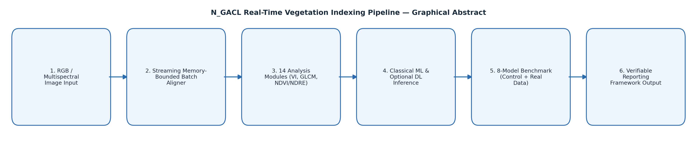

N_GACL Vegetation Indexing Pipeline
33.8% balanced accuracy vs 4.55% chance baseline
Graphical abstract

Process simulation
Naziru explains this step
Ask a question about this work
Send Naziru a question directly — it's delivered straight to his inbox.